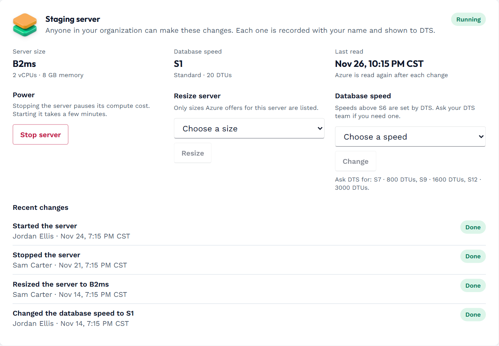
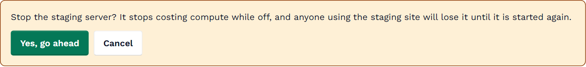

Bedrock
Your staging server
Staging is a test copy of your website, for trying changes before they reach the site your visitors use. If DTS has connected your staging server to Bedrock, you can start it, stop it, resize it and change its database speed yourself, without waiting on DTS.
Find it under Performance → Staging.

These controls work on staging only. Changes to your production server and database are made by DTS; ask your DTS team.
Reading the card
- The badge at the top right says whether the server is Running, Stopped, Starting up or Shutting down.
- Server size and Database speed are what the server and database are set to now.
- Last read is when Bedrock last asked Azure, the cloud service your server runs on. It asks again after each change.
If the card says No staging server is connected yet, DTS has not linked your staging server to Bedrock. Ask DTS if you expected to see it.
Stopping and starting the server
A stopped server does not cost compute time, so stopping staging when nobody is using it saves money. While it is stopped, the staging site is unavailable to everyone.
- Under Power, press Stop server (or Start server if it is stopped).
- Read the confirmation and press Yes, go ahead.
- The card shows the change in progress and updates itself when Azure finishes. Starting takes a few minutes.

Resizing the server
- Under Resize server, choose a size. Each one shows its processors (vCPUs) and memory. Only sizes Azure offers for your server are listed.
- Press Resize, then Yes, go ahead.
Azure restarts the server to apply the new size, so the staging site is briefly unavailable. The monthly cost of the server changes with its size.
Changing the database speed
- Under Database speed, choose a speed. Higher numbers are faster and cost more.
- Press Change, then Yes, go ahead.
The database stays available while Azure moves it. You can choose speeds S0 to S6 yourself. Faster ones are listed under Ask DTS for; if the list says Set by DTS, your database is on a kind of plan DTS adjusts for you.
Good to know
- Anyone at your church with access can make these changes.
- Every change is recorded with the name of the person who asked, listed under Recent changes, and shown to DTS.
- One change at a time. While a change is in progress the buttons are off. Wait for it to finish.
- A change that ends as Did not complete shows the reason under it. Try again, and if it fails twice tell DTS.
- If the card says Bedrock cannot reach Azure right now, changes are paused. Try again later.